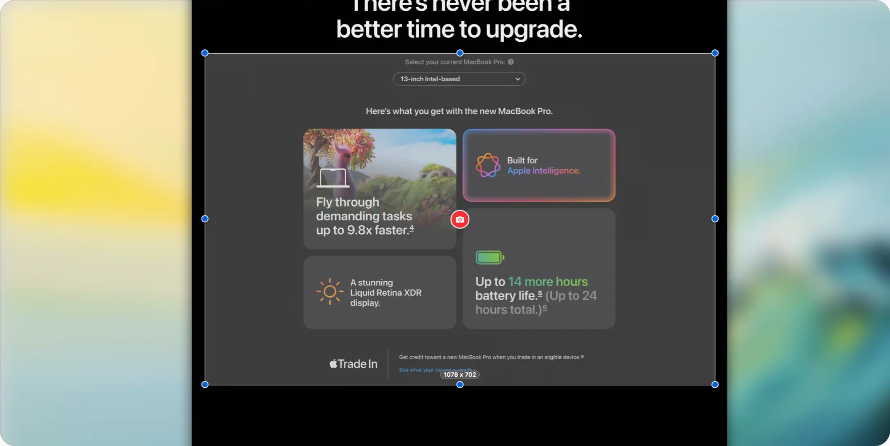
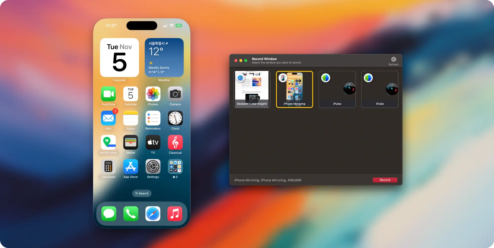
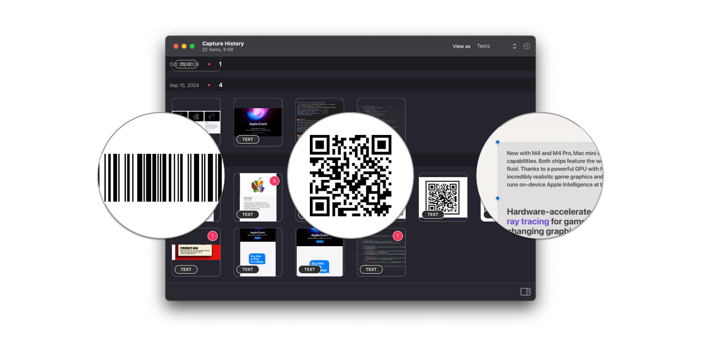
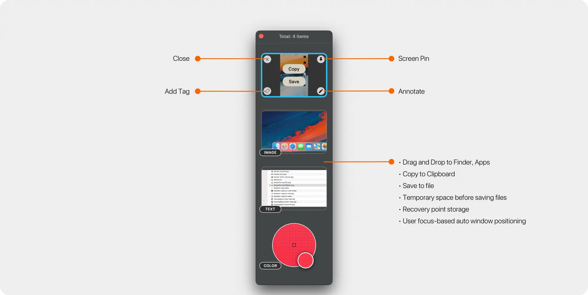
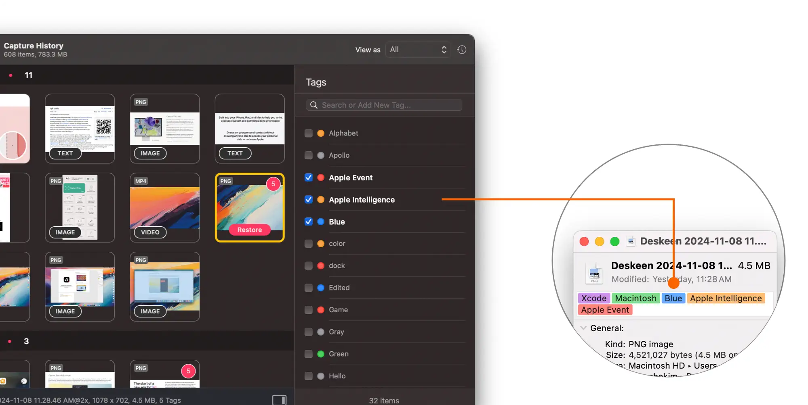
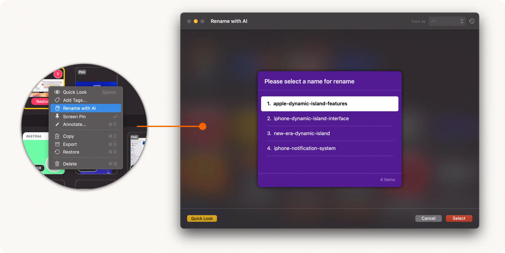
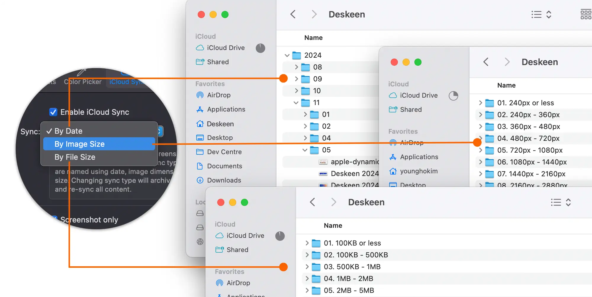
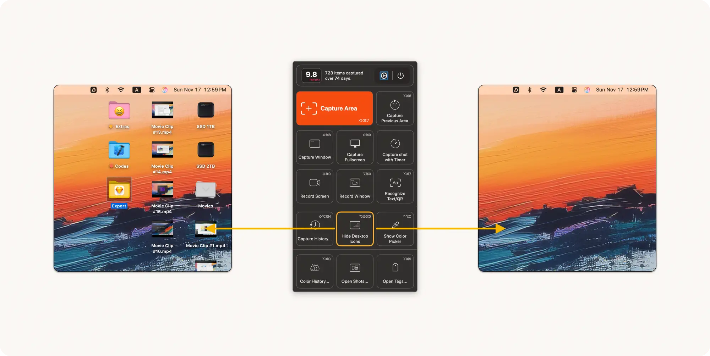

Deskeen - Capture your insight!
Screen Capture - Now Leveled up!
We've redefined the standard of screen capture. Beneath the intuitive interface lies a world of captivating features that will amplify your insights with unprecedented clarity. Deskeen presents the most elegant way to capture moments. Every frame on your screen becomes a meaningful story. No complex setup needed—just focus on you and the moment. Deskeen transforms the entire experience. From the very first click, Deskeen flows with a distinctive simplicity that seamlessly connects every feature. What begins at your fingertips transcends mere capture to become perfect communication.Simple yet powerful—start your new experience today.
Capture screenshots. Beautifully simple
All the essential screen capture features you need — Capture Area, Capture Window, Capture Fullscreen, and Capture with Timer — ready at your fingertips. Take your workflow further with thoughtful additions like Capture Previous Area and Show/Hide Desktop Icons. Every feature accessible through quick keyboard shortcuts. Simple. Powerful. Essential. Ready to discover what makes Deskeen different?
Record Any Screen. Any Window.
Effortless screen recording. Just like taking a screenshot. Capture any window or select custom areas with precision. Choose your perfect setup — H.264 or H.265 encoding, frame rates from 15 to 60 FPS, and crystal-clear audio in AAC, ALAC, or FLAC. Screen recording with Deskeen. As simple as it should be.
We can read everything, From symbols to languages
Deskeen seamlessly recognizes what you see — from barcodes and QR codes to 13 languages including English, French, German, Italian, Chinese (both Simplified and Traditional), Japanese, Korean, Portuguese, Russian, Spanish, Thai, Ukrainian, and Vietnamese. Just select any area on your screen like you would for a screenshot. Deskeen intelligently processes the content and copies it to your clipboard, ready to use across your favorite apps. All in one swift motion. And that selected area? Deskeen saves it as a screenshot too — so you can easily reference back to your original capture. Simple.
Capture Color too!
The intelligent color picker that knows where your colors came from. Deskeen's color picker doesn't just capture colors — it remembers exactly where you found them. Every color comes with a snapshot of its source, making it effortlessly identifiable later.
Seamlessly adjust your view Three picker sizes and six zoom levels are just a gesture away. Use your mouse wheel or trackpad to switch between picker sizes, and hold Option for precise zoom control.
22 formats Endless possibilities. Transform any captured color into 22 different formats across Web, macOS, iOS, .Net, Java, and Android. Because great color should work everywhere.
Capture Preview
When capturing your screen, you want options. Maybe you need a quick copy to clipboard. Perhaps you want to save it as a file. Or you might want to review it later. Capture Preview is the answer. It's a powerful yet simple way to do more with your captures. Pin them to your screen for quick reference. Annotate them with precision. Copy them instantly or save them for later — all right where you need them. And it works the way you do. Position Capture Preview on either edge of your display through Settings. With multiple monitors, it follows your focus seamlessly, making your workflow more intuitive than ever.
Screen Pin it!
Pin your ideas, right where they belong Screen Pin transforms your screenshots into digital sticky notes, elegantly pinned to your screen exactly where you captured them.
Perfect memory. Perfect placement. Your screenshots stay precisely where they belong. Every time you open them, they return to their original position — just as you intended.
Magic in transparency. A simple scroll of your mouse or trackpad gesture unveils Screen Pin's magical transparency control. Compare, contrast, and create with unprecedented precision.
Effortlessly powerful. Drag and drop to save. Copy to clipboard in an instant. And yes, lock your pins in place when you need them to stay put. Everything you need, right where you need it.
Annotate. Make your mark
Essential tools like Redact and Counter make it effortless to mark up sensitive information and collaborative thoughts with sophistication and simplicity. Integrated with macOS Markup, you can enhance your work with text, freehand drawings, and shapes of all kinds. And there's more. Edit in real time using your iPhone or iPad, bringing true continuity to your workflow. Restore original images with a single click, while drag and drop, sharing, and clipboard functions work exactly as you'd expect. With Deskeen, screenshot editing isn't just easier — it's effortless.
Redact
Counter
Markup
Markup image on iPhone/iPad
Restore Original
Capture History. Complete control!
All your captured content lives in Capture History, where powerful features make organization effortless. Access your captures instantly, annotate with precision, and manage your library with intuitive tools designed for the way you work.
A complete suite of tools at your fingertips Restore Instantly Bring back any capture, anytime, anywhere. Your content is always ready when you need it. Powerful Features Made Simple From Quick Look to Screen Pin, every tool is thoughtfully designed for seamless workflow. Annotate captures, copy to clipboard, or use AI-powered renaming — all with just a click.
Smart Management Set custom retention periods to keep your library organized automatically. Your captures, managed your way.
Seamless Tags Integration Leverage the power of macOS Finder tags to organize and find captures effortlessly.
Advanced Filtering Find exactly what you need with intelligent filtering across screenshots, videos, text, and colors. Navigate your captures with precision and speed.
Tags that follow you. To the edge of the universe
More than just tags. Incredibly integrated. Tags in Deskeen aren't just labels — they're seamlessly recognized by macOS Finder the moment you apply them to your images. Search through your tagged screenshots instantly after export or iCloud sync. With native support for macOS tag colors, your organized collections stay vibrant across your entire ecosystem — from Mac to iPhone and iPad — when synced through iCloud. From basic organization to deep system integration, Deskeen's revolutionary approach to tagging transforms how you manage your screenshots. It's not just powerful. It's precisely what you'd expect from a Mac app.
Rename with AI
AI integration. Reimagined. Seamlessly integrated with OpenAI and Claude, Deskeen analyzes your screenshots to suggest intelligent filenames. It's just the beginning of our AI journey. Get ready for even more remarkable AI features ahead. Magic happens with AI. And this is only the beginning.
iCloud Sync
iCloud Sync in Deskeen. Seamlessly intelligent. Intelligently seamless. Sync your content exactly how you want it - by date, image dimensions, or file size. When you change sync preferences, Deskeen doesn't just delete your existing data. It intelligently archives everything, ensuring your synchronized content stays protected. Any changes you make — whether it's updating tags or editing files — sync instantly across your Mac, iPhone, and iPad through iCloud. Check your latest work anywhere, anytime. It's beautifully simple. Incredibly intuitive. And with Live Tags, it's more powerful than ever.
The Desktop Icon Hider
Instantly organize your entire desktop with a single click. Whether you're screen sharing, presenting, capturing, or recording, Deskeen intelligently safeguards your privacy by concealing sensitive information. Transform your cluttered workspace into a pristine desktop environment — all with just one click or shortcut.
Support
We're always here to help with any question or comments - feel free to contact us.
Deskeen's 'Settings > Advanced > Send Feedback...' is perfect for privately sending us issues and feedback.
Buy Deskeen for Only $6.99

Category: Productivity
Latest Version: 1.0.3 ()
Compatibility: Requires macOS Sonoma (14.0) or later, for Apple Silicon Macs or intel-based Macs